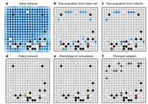

http://me2.do/GmQlmeck
저는 인공지능을 전공한 학자입니다. 물론 인공 지능이라고 불리는 학문 안에도 참 여러 갈래가 있으며 응용 분야도 다양하기에 그 중 한 분야에 정통하다 해서 모든 인공지능에 정통하다고 할 수는 없습니다. 다만 공교롭게도 제가 지난 30년 동안 연구해 온 것이 기계 학습(machine learning) 이며 요즘 화제가 되고 있는 인공지능 바둑 엔진 알파고의 기본 원리가 되는 여러 알고리즘에 대해 많이 알고 있습니다. 그리고 바둑은 기원 기준으로 아마추어 5급 정도 기력이라서 그냥 기보 따라 두어 보고 해설 좀 들으면 대부분 이해는 하는 선입니다.
오늘 세계에서 가장 바둑 잘 두는 기사 중 하나이자 가장 창조적인 수를 그간 많이 보여 주었던 이세돌 사범이 구글 딥마인드 회사가 개발한 인공지능 바둑 엔진 알파고와의 5번기 중 제 1국에서 아쉽게 패했습니다.
바둑을 전혀 둘 줄도 볼 줄도 모르는, 그래서 집에서 제가 바둑 TV를 시청하면 투덜거리기 일쑤인 집사람이 제게 문자를 했더라고요 알파고가 이겼다고....그리고 바둑이나 인공지능을 다 잘 모르는 사람들에게 좀 이해하기 쉽게 글 하나 써 주면 안되겠느냐 해서 이 글을 씁니다. 말하자면 공교롭게도 저는 바둑을 잘 두진 못해도 그냥 즐길만큼 두고 인공공지능은 주 분야가 약간 다르긴 해도 알파고의 원리에 대해 꽤 잘 아는 사람이니까요....
심리학자인 집사람은 TV에서 (아마도 해설이나 뉴스에서) "계산이 직관을 이겼다" 라는 식으로 표현했는데 맞느냐 해서 저는 '아니다 그렇게 볼 수 없다"고 이야기 했습니다. 아마 기자들이나 인공 지능 원리, 특히 기계 학습 원리에 대해 잘 모르는 사람들이 손쉽게 사람은 직관력이 뛰어나고 컴퓨터는 계산을 빠르게 많이 한다는 점에 착안해 인간과 프로그램의 차이를 극명하게 보여주기 위해 이런 용어를 쓴 것 같은데 아마 이세돌 사범이나 (저도 오늘 대국의 대부분을 컴퓨터 인터넷 중계로 보았습니다 마침 공강이라서) 바둑 애호가들 입장에서는 그렇게 느끼기보다 "프로 기사가 두는 것 같다" 고 생각했을 겁니다. 특히 어떤 부분은 현 중국 제1 기사이자 세계 3관왕인 커제 9단 같고 중후만의 어떤 부분은 전성기 때의 이창호 9단을 보는 것 같다는 느낌을 가졌을 겁니다. 후자가 맞습니다.
요약해 말하면 이세돌 9단은 오늘, 수백 명의 준프로/프로 기사가 1200대 이상의 컴퓨터 CPU를 이용해 협업한 프로그램에게 진 겁니다. 알파고의 원리가 바로 그렇습니다.
그래서 직관(이세돌)이 계산(알파고, 컴퓨터)에 진 것이 아니라 한 위대한 기사가 (말하자면) 1200명의 다른 기사의 협업 플레이에 진 겁니다. 물론 정확히 말하자면 계산에 1200여 대의 컴퓨터 CPU가 동원되고 협업한 기사 수는 수천 명일 수도 있습니다.
이세돌 9단 이전 중국계로 유럽에서 활동하는 프로 기사 판 후이 2단과의 작년 10월 대국 (5-0 알파고 완승, 미공식 포함 8승 2패) 후 금년 1월 세계적인 과학 전문지 네이처에 실린 알파고의 원리에 관한 논문입니다. 전공자 입장에서는 비교적 쉽게 그 원리를 이해할 수 있게 써 놓았습니다. 물론 기계 학습과 신경망 이론에 대해 모르는 분들은 두 문장 이해하기도 쉽진 않습니다만.....가급적 쉽게 원리를 설명해 보겠습니다.
알파고는 크게 두 가지 학습을 합니다.
우선 알파고는 전문 기사 혹은 고수들의 바둑 기보를 통해 그 전문 기사들의 "다음 수"를 예측하는 능력을 학습합니다. 여기에 동원된 신경망은 policy network(정책 네트워크)라고 불리는데 고수들의 바둑(보통 한 경기가 200~300수 정도)은 이미 "정답" 즉 다음에 무슨 수를 두었는지가 나와 있으니 이를 "감독 학습(Supervised Learning)이라 합니다. 여기에 동원된 신경망 알고리즘은 소위 Deep Neural Network으로 무려 13 단계로 학습합니다. 이게요 보통 신경망 학습은 3단계 혹은 4단계 정도인데 그보다 매우 엄청나게(수만 배 정도) 정교하게 학습한다고 보시면 됩니다. 물론 이러자면 계산량이 어마어마합니다.
그 다음 알파고는 소위 강화 학습(reinforcement learning)을 통해 말하자면 내공을 쌓습니다. 이는 자기 스스로 대국을 하는 단계로 어떤 수를 어떻게 두었을 때 승리했는가를 분석해서 각 수순마다 점수(확률)을 부여하는 단계입니다.
발표 논문에 의하면 감독 학습에 의한 고수들의 '다음 수 맞히기" 학습에서 알파고는 55% 정도의 정확도를 보였다 하는데 여기에 동원된 문제가 3천만개라고 하니까 250수 짜리 대국을 첫 수 부터 맞히기로 했다면 12만 판에 대해 학습을 한 겁니다. 참고로 한 사람이 상대를 바꿔가며 대국을 한다 할 때 한 판에 20분 걸린다면 1시간에 3판, 하루 12시간 두면 36판입니다. 그것을 3300일 간 계속하면 12만 판이니 한 사람의 9년 대국 횟수에 맞먹는다 봐야죠.
물론 여기서 45%를 못 맞혔다 해도 그 45% 가 전혀 엉뚱한 수는 아닐 겁니다. 아무리 고수라도 어느 순간에나 두세 가지 착점 중 하나를 선택하는 기로가 있기 마련이니까요. 문제는 이렇게 두 가지 학습을 거친다면 알파고의 착점(수)은 사람 고수의 착점과 닮아있게 된다는 겁니다. 대략 55%는 정확히 그리고 45%는 비슷하게.....
약간 기계 학습의 원리를 아는 분을 위해 설명하자면 기계 학습의 알려진 단점 중 하나가 속칭 지역 최고치(local maxima) 에 빠지는 경우인데 이를 방지하기 위해 "무작위 착점"을 통한 재학습/보정 학습 기능도 있습니다. 따라서 고수들이 두어 본 수 만이 아니라 안 두어 본 수도 강화 학습 단계에서 시험해 봅니다.
여기에 이번에 기사에 많이 나온 몬테 카를로 기법과 Tree search 라는 알고리즘을 이용해서 계산량을 줄여 갑니다. 원래 바둑 한 판의 수순의 가짓수는 무려 10의 80승 정도라 합니다. 이 정도 가지 수는 최고의 컴퓨터가 우주 탄생부터 시작해 계산해도 끝나지 않는 엄청난 양입니다. (최고 빠른 컴퓨터가 10의 10승을 1초에 계산한다 하고 1년은 3천만초니 3년에 10의 8승을 쳐 줘도 10의 60승 년이 필요하죠...) 그때문에 고수의 수순을 중심으로 "이미 잘 두는 사람의 수순 주변의 여러 가지 수"를 탐색하는 기법을 알파고가 사용합니다. 그래서 무작위적인 탐색은 하지 않습니다.
여기에 마지막으로 가치 네트워크를 만들어 바둑판의 각 수의 승리에의 공헌도를 학습합니다. 이 부분에는 통계적으로 오차를 최소화하는 기법이 이용되었습니다.
작년 10월 판후이 2단과의 대국에서 알파고는 무려 1200여 대의 컴퓨터 CPU를 병렬로 연결해 계산하면서 대국에 임했습니다. 이는 말하자면 1200명의 사람 고수가 각자 다음 수 착점에 대해 바둑판의 지역범위를 나눠서 계산한 후 평가하여 자신들이 찾은 수의 가치를 계산해 오면 그 중 최고의 가치를 지닌 수를 다음 수로 결정하는 것과 비슷한 전략입니다.
이래서 제가 앞에 이세돌 9단은 바둑 고수 1200명의 협업에 진 것이다 라고 말하는 겁니다.

네이처 논문에서 밝힌 예제입니다.
판후이 2단과의 비공식 대국 중 한 장면으로 흑(알파고) 둘 차례입니다. 먼저 바둑판 전체의 앞으로 둘 수 있는 곳에 대해 가치 판단을 하게 되는데 b와 c 에 있는 것 처럼 여러 가지 다른 방법으로 평가를 한 후 (숫자는 승리 기여 확률 퍼센트) d 는 감독 학습 정책 네트워크에서의 다음 수 착수 확률로 즉, 사람 고수의 착점 확률이며 e는 알파고의 경험에서 나오는 승리 기여 확률표에 의한 착수 확률입니다. 그리하여 보다 확률이 높은 e의 착수를 선택하는데 f에서 보시는 것 처럼 단순히 한 수의 착점만 결정하는 것이 아니라 몬테 카를로 샘플링 및 트리 탐색에 의거해 이 경우 상대 착점까지 포함해 대략 20여 수 앞을 보았다는 거지요 즉 그렇게 20여 수를 더 진행하는 것이 가장 좋은 착점 수순이라고 판단한 것이죠 (쌍방 최선).
자 그러면 d는 사람 고수 착점에 대한 학습이고 e는 자체 시물레이션 게임 착점인데 이 둘을 비교해 보다 확률이 높은 쪽을 착점하는데 f에서 보듯이 한 단계가 아니라 20여 번의 착수를 다 고려한 최선을 둔다는 겁니다.
이래서 고수죠 알파고가....
하니까 쉽게 설명드리자면 d와 e 경우를 비교할 때 d 를 알파고가 선택한다면 그것은 사람 고수들이 보통 택하는 착점, 즉 '다수의 정수"를 택한 것이고 e를 택한다면 의외성이 있지만 실전 경험상 승리 기여도가 높게 보이는 착점을 한다는 건데 이 두 가지 경우를 따로 학습, 탐색한 뒤 비교해 고른다...가장 손쉽게 이해시켜드리자면 알파고의 원리는 이렇게 축약될 수 있을 겁니다.
오늘 해설에서 "알파고도 실수를 했네요" 같은 말이 나왔습니다. 헌데 정확히는 실수라기 보다는 "최선이 아닌 수"였을 겁니다. 물론 그 결과 부분적으로 손해를 보기도 합니다. 이런 면이 인간적으로 느껴지기도 한다고 해설했는데요....이는 말하자면 이세돌 사범과 100명의 프로 1~3단 기사가 대국을 하는 경우라고 보시면 되겠습니다. 즉 이세돌 사범의 상대는 100명의 프로 유단자가 협동한 뒤 100명이 택한 최선의 수를 두는 것인데 의견이 갈리면 가장 다수가 선택한 수를 두는 거죠. 다수가 선택했다고 다 최선은 아닌 고로 손해볼 수 있습니다.
헌데 저도 보면서 놀란 게 102수 즉 우변 '바꿔치기'를 강요한 수인데 이런 전략은 컴퓨터가 취할 수 없을 것으로 생각했을 겁니다., 저 역시 어떻게 가능하지? 하고 놀라서 논문을 다시 읽었거든요....
알파고는 단순한 계산 프로그램이 아닙니다.
이 선입견..알파고는 프로그램이라 계산할 뿐이야..... 가 오늘의 패배의 원인이 아닐까 합니다. 아무리 사실 원리를 설명해도 인공 지능이라는 분야의 원리를 모르는 경우는 이 선입견에 빠지기 쉽죠.
그래서 내일 대국에선 이세돌 사범이 이렇게 생각해야 합니다. 저 방에는 기사 100명이 있다. 그 증에는 이창호 9단도 커제 9단도 있다. 또 그보다 약한 프로 초단이나 아마 강자 정도도 있다. 다만 어느 한 사람의 의견이 아니라 다수의 의견을 많이 택하고 일부는 자신이 집에서 두어 본 자숩 바둑에서 "많이 이겨본 수"로 둔다. 다만 알파고의 고수와의 대국 판 수는 수십만 판이며 따라서 대국 경력은 10년 넘고 자습 판 수는 그보다 많다.
또 하나의 선입견이 있죠 전체와 부분인데....
- 알파고는 프로그램이라 계산이 빠르나 부분 전술에 치우치지 전체 판은 잘 못 볼 거다. 따라서 국면 전환 또는 간보기, 응수 타진 같은 전개에 약할 거다. 혹은 그런 수는 안 두어 올 거다.
오늘 대국에서 보듯 그렇지 않고요 위 논문 그림에서 설명했듯이 판 전체의 착점에 대해 계산합니다.
이래서 알파고는 약점이 참 적은 바둑 엔진 프로그램입니다.
솔직히 이젠 누구나 이 승부가 5대5임을 알게 되었습니다. 상대벙은 지치지도 않고 심리전에도 말려들지 않습니다. 그리고 자신이 유리하면 안정적으로 둡니다. 하지만 불리하면 흔들 줄 압니다. 왜냐하면 고수들이 그렇게 두는 걸 보고 착점의 55%를 정확하게 맞혀 낸 프로그램이거든요.
그리고 지난 5개월 간 더 진화했을 것인데 더 많은 학습량이 있으면 더 정교해질 수 밖에 없는 원리가 있기 때문이죠.
그렇다고 완벽은 아닙니다. 전체를 다 계산할 수 없는 것은 마찬가지고 (20수 30수 앞은 보더라도) 또 많은 경우 "다수의 선택"을 따른다는 겁니다. 다수가 항상 최선은 아니므로 뛰어난 기사인 이세돌 사범이 이길 수도 있습니다.
- 알파고가 직관력이 있는거야?
바둑도 인공 지능도 모르는 심리학자 집사람의 질문입니다.
이렇게 답변해야 하겠습니다. 물론 제가 다 정확하게 답변한다 말씀드릴 수는 없겠지만.....
사람의 직관이란 계산하기 애매 모호하거나 계산량이 너무 많아 공헌도를 계산하기 어려운 부분에서 "이럴 것 같은" 착수 또는 행동이라 하겠는데 이는 아마 통계적으로 보았을 때 좋은 결과가 나올 개연성이 높은 행동에 대한 선택일 것이다. 사람은 뛰어난 느낌으로 short-cut을 예상해 그렇게 행동한다면 알파고가 보여 준 행동은 그 부분을 통계적으로 추정한 뒤 계산을 통해 개연성을 가져간 것이다. 따라서 "계산된 흉내낸 직관"이라 하겠다.
사람은 어떤 행동을 한 뒤 그 이유에 대해 대부분 답변을 한다. 그 말은 행동의 근거를 스스로 입증하는 경우가 많은데 직관에 해당하는 쪽은 대개 "특별히 딱 이거다 하는 이유는 없지만 왠지 그러하다"에 해당할 것인데 알파고 학습의 근간인 신경망 학습의 원리 또한 같다. 입증할 필요 없이 고유의 목적(승리)애 가장 가깝게 반응하는 행동을 자신의 계산에 의해 선택할 뿐이다.
이렇게 답변드릴 수 있겠습니다.
좀 쉽게 설명하느라고 했는데 글쎄요.....이해가 가능하실지......
제가 전공하고 연구하는 학문도 이 기계학습입니다. 저는 그것을 의료 영상 해석에 응용합니다만.....
이세돌 9단의 승리를 기원합니다만 알파고 만든 연구진들에게도 박수를 보냅니다. 그 원리를 알아도 과연 그렇게 정교하게 반응하도록 만들려면 다년 간 여러 사람의 최선의 노고와 수천 대의 컴퓨터 계산 능력의 협업이 있어야 하는 바 .쉽게 할 수 없는 일을 해 냈습니다.
이세돌 사범에게 조언한다면 상대는 알파고가 아니라 여러 명의 프로 기사의 상담기다. 이렇게 보고 자기 바둑을 두면 승리할 겁니다. 컴퓨턴데 이렇게 둬? 하지 않아야 합니다. 알파고의 원리는 여러 고수들의 모방 분석 + 자체 판 학습 승리 확률 최적화 입니다.
쎈돌!!! 당신의 힘을 보여 줘!!!!